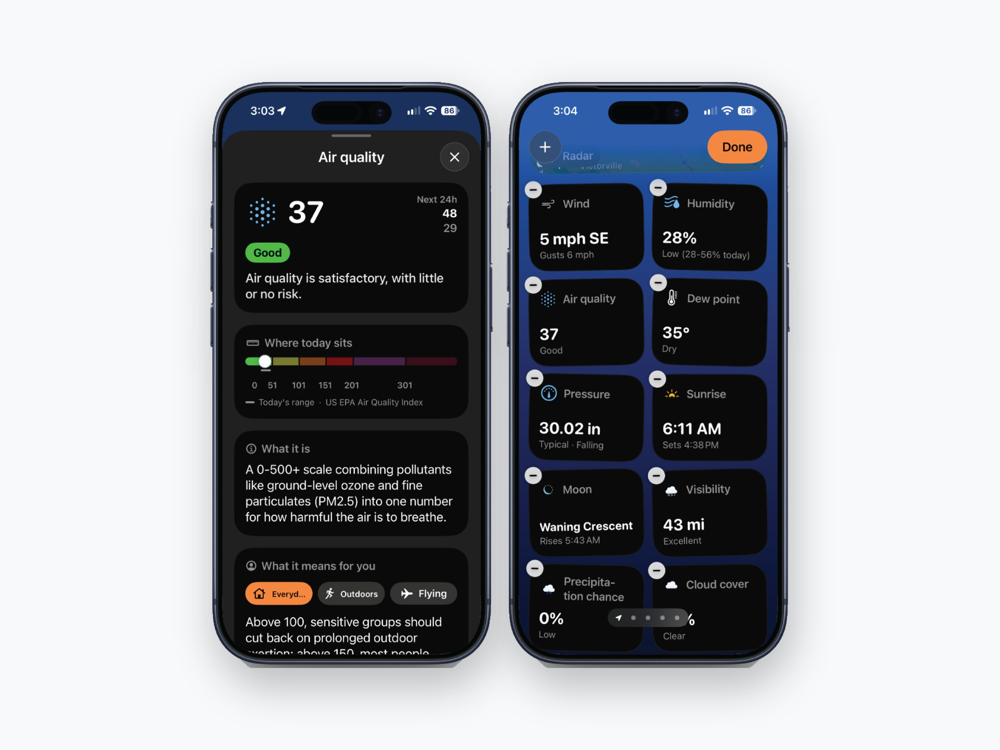
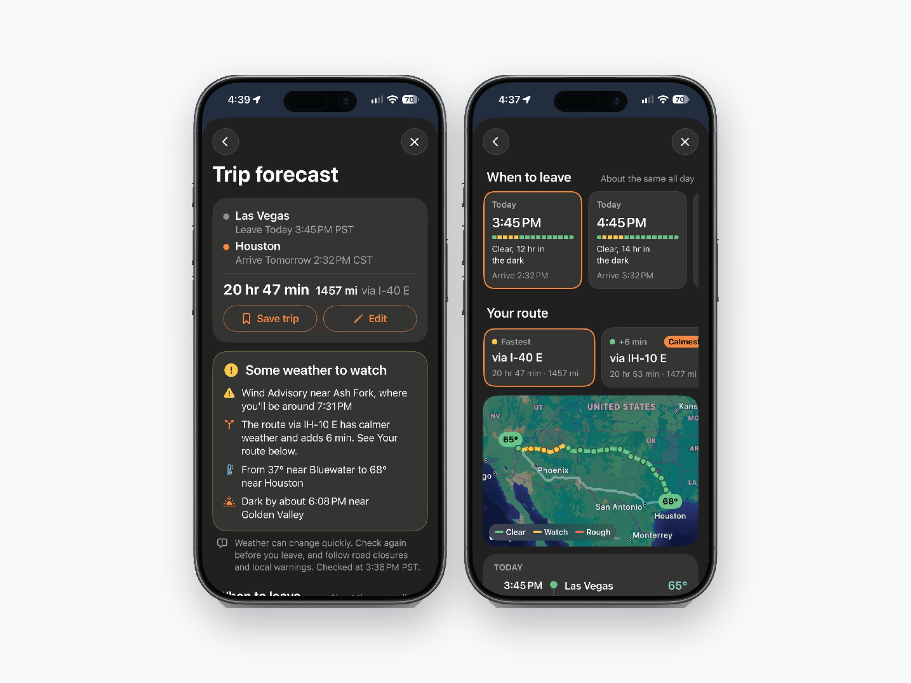
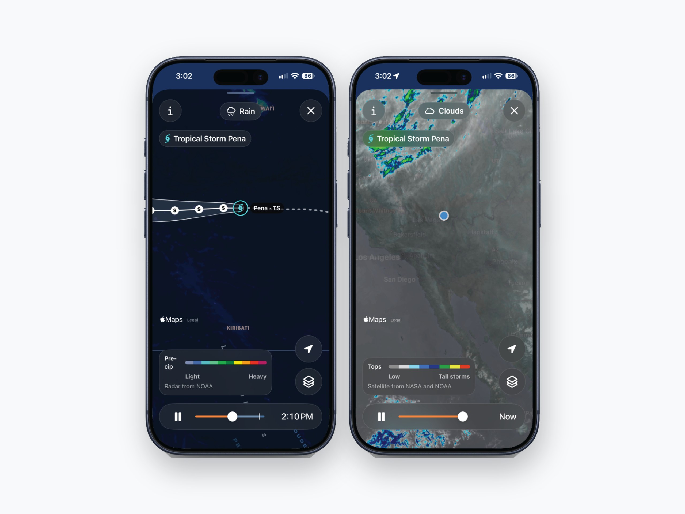
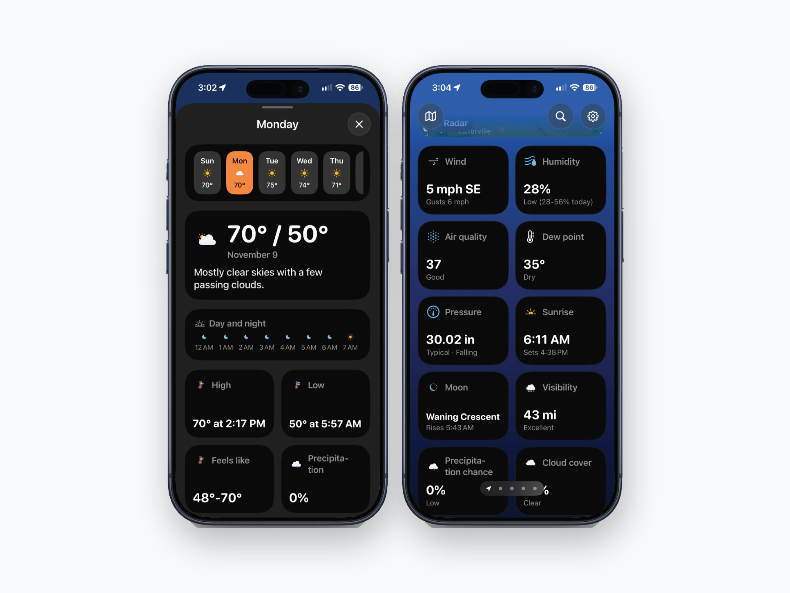
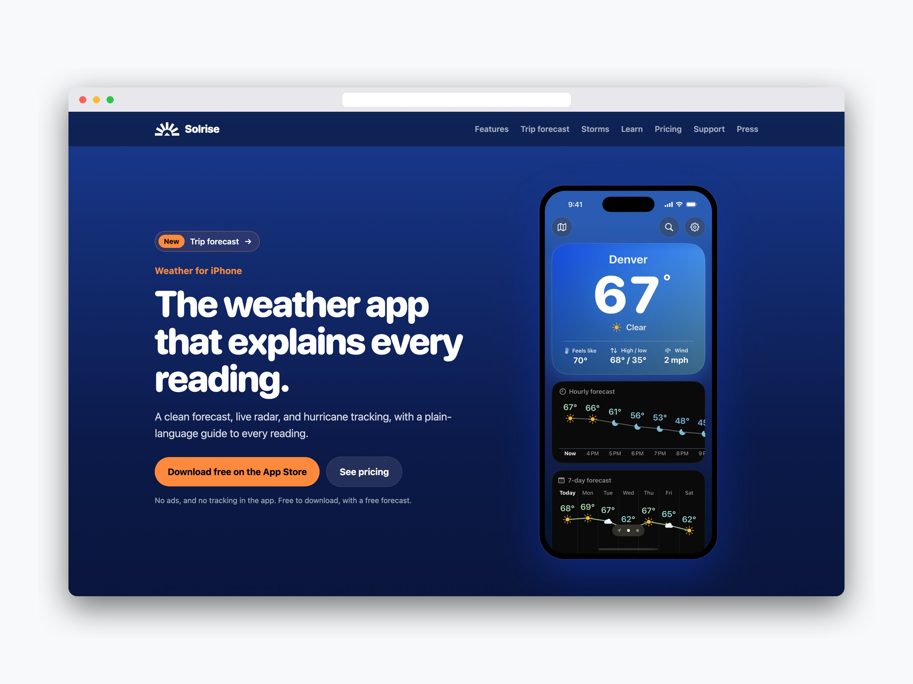
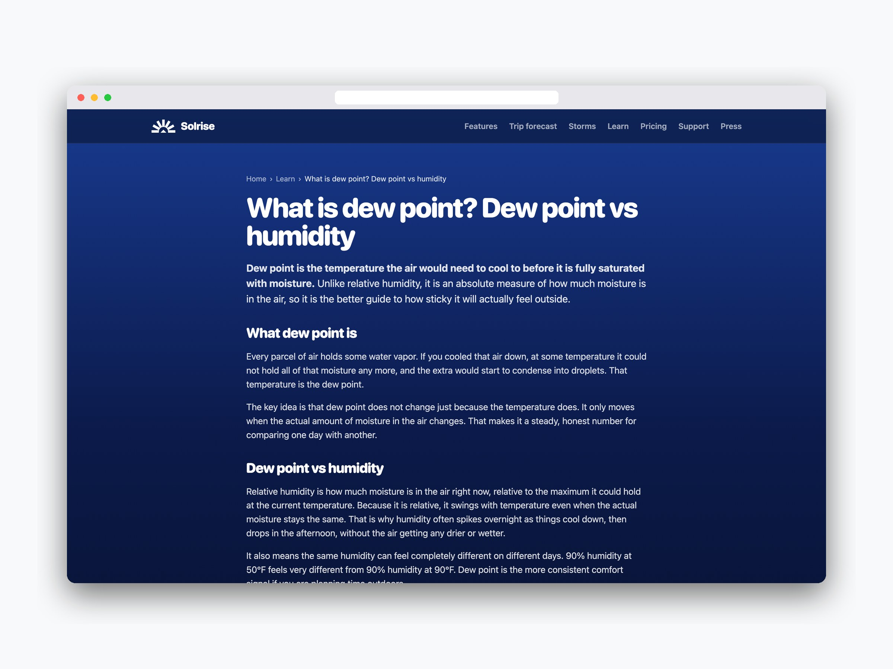

Solrise Weather
A weather app that explains every reading, and forecasts your drive for the time you reach each town.

Weather that
explains itself.
Solrise is an iPhone weather app built on one idea: a number is not an answer. Tap any reading, from wind and dew point to UV and the aurora, and it tells you what it means right now and what it means for your day.
Trip forecast takes that one step further, into your plans, reading the weather along a drive for the hour you reach each town. I designed and built all of it, from the interface to the server behind it and the website that launched it, and shipped it to the App Store.
Ways to read every number: advice for everyday life, the outdoors and flying
How far ahead Trip forecast plans a drive, town by town, at the hour you arrive
Ads and trackers. Severe weather alerts are free for everyone
Every app shows the weather.
None of them explain it.
There is no shortage of weather apps, and each one does something great on its own. But open any of them and you get the same wall of numbers: a 40% chance of rain, a dew point of 58, a UV index of 7. Most people do not know what those mean, and no app tells them in the moment.
So weather stays something you glance at instead of something you understand. You still do not know whether to bring the jacket, move the run, or rethink the drive through the mountains this afternoon.
Read for the time you reach each town, not just where you start.
Trip forecast, the idea the whole app builds towardUnderstanding first,
then planning.
I owned the whole product: strategy, interface, the SwiftUI app and widgets, and a small server that pulls radar, storm and air quality data from the agencies that publish it. I wrote every guide and matched it to the real published scale it comes from.
Two decisions carried the design.
Explain every reading where it lives
No glossary, no help center. Tap a number and its guide opens right there: where today sits on the official scale, what it feels like in plain words, and what it means for you, switchable between Everyday, Outdoors and Flying. Same structure every time, so learning one guide teaches you all of them.
Forecast for when you are there
A forecast for your starting city is almost useless on a ten-hour drive. Trip forecast reads each town for the hour you will reach it, compares leaving now with the next 8 hours, and lists official alerts with when you will be there.
What shipped.




The explaining starts
before the download.
I also designed and built solriseweather.app, the marketing site, and treated it as part of the product rather than an afterthought. It carries the same voice and the same idea: most people find a weather app by searching a question like "what is dew point," so the site answers those questions.
Ten plain-language Learn guides, on dew point, the UV index, a 40% chance of rain, the Kp index and how to read a METAR, are written from the same sourced material as the guides in the app. Every page carries structured data for search: the app listing with its prices, FAQs, articles and breadcrumbs, plus a sitemap submitted through Google Search Console. Analytics stay off until a visitor says yes.


Weather people can
actually plan around.
Idea to App Store in ten weeks
From the first commit on September 9 to a public release on November 15, 2026, with Trip forecast in version 2.1. I took it through App Review myself, including a rejection I resolved and resubmitted.
Every number has a source
Forecasts come from Apple Weather, and radar, storms, air quality and aviation come straight from NOAA, the National Weather Service and NASA. Every guide names where its data comes from.
Built to be found
A website with 16 pages in its sitemap, ten search-focused Learn guides, structured data on every page and a press kit, live more than a month before the app reached the App Store.
Fair and private by design
Rebuilding the back end on public agency data replaced a paid data provider, which kept it to one simple Premium plan with severe alerts free for everyone. No ads, no tracking and no account.